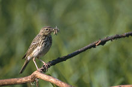
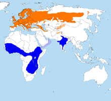
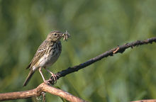
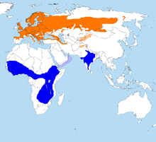

| Tree Pipit | |
|---|---|
|  | |
| Conservation status | |
| Binomial name | |
| Anthus trivialis (Linnaeus, 1758) |
|
|  | |
Nominate breeding A. t. haringtoni breeding Passage Wintering |
| Tree Pipit | |
|---|---|
|  | |
| Conservation status | |
| Binomial name | |
| Anthus trivialis (Linnaeus, 1758) |
|
|  | |
Nominate breeding A. t. haringtoni breeding Passage Wintering |
Tree Pipit, Anthus trivialis, is a small passerine bird which breeds across most of Europe and temperate western and central Asia. It is a long-distance migrant moving in winter to Africa and southern Asia.
This is a small pipit, which resembles Meadow Pipit. This is an undistinguished looking species, streaked brown above and with black markings on a white belly and buff breast below. It can be distinguished from the slightly smaller Meadow Pipit by its heavier bill and greater contrast between its buff breast and white belly. Tree Pipits more readily perch in trees.
The call is a strong spek. Unlike the weak call of its relative. The song flight is unmistakable. The bird rises a short distance up from a tree, and then parachutes down on stiff wings, the song becoming more drawn out towards the end.
The breeding habitat is open woodland and scrub. The nest is on the ground, with 4–8 eggs being laid. This species is insectivorous, like its relatives, but will also take seeds.

.jpg){kind=link}
{kind=link}